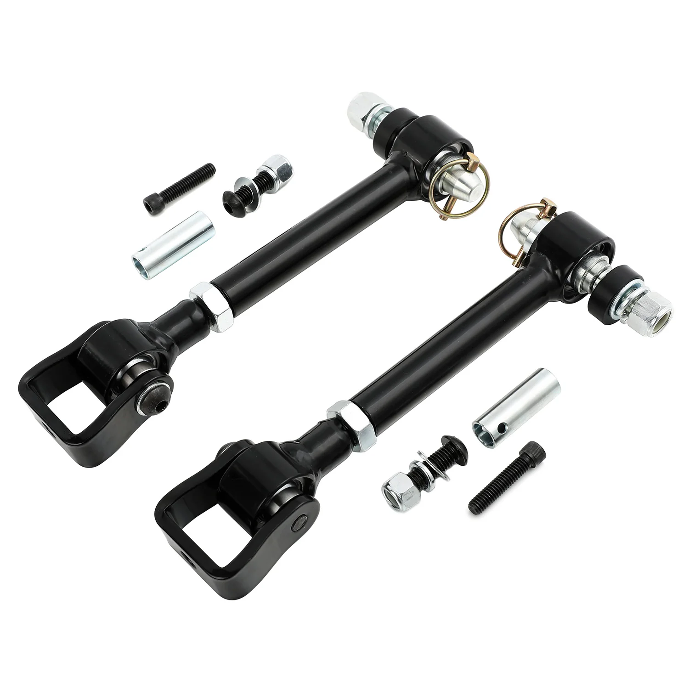

1 / 9FAPO Front Adjustable 4-6" Lift Sway Bar Links Fits Jeep Cherokee XJ 1984-2001
Charakterystyka przedmiotu: Stan: nowy Marka: FAPO Gwarancja producenta: 1 rok Numer części producenta: PZ074510 Umieszczenie na pojeździe: przód, lewo, prawo, góra, dół Typ: Łącznik stabilizatora Wysokość podnoszenia: 4-6 "(przód) Długość oczka: 7,76"-11,69" Pełna długość: 10,39"-14,33" Górne mocowanie: 1/2-20 Dolne mocowanie: 5/16-18 Typ końcówki stabilizatora: gniazdo kulowe, wspornik Średnica pręta: 0,87 cala Re…
Item Specifics: Condition: New Brand: FAPO Manufacturer Warranty: 1 Year Manufacturer Part Number: PZ074510 Placement on Vehicle: Front, Left, Right, Upper, Lower Type: Sway Bar Link Lift Height: 4-6"(Front) Eyelet Length: 7.76"-11.69" Full Length: 10.39"-14.33" Upper Mounting: 1/2-20 Lower Mounting: 5/16-18 Sway Bar End Type: Ball Socket, Bracket Rod Diameter: 0.87" Adjustable: Yes Modified Item: Yes Fitment Type: Performance/Custom Greasable or Sealed: Sealed Mounting Style: Bolt-On Material: Alloy Steel Universal Fitment: No Custom Bundle: Yes Items Included: Mounting Hardware, Bolts, Nut, Bracket Interchange Part Number: Adjustable 4" 5" 6" Inches Lifted OE/OEM Part Number: Quick Disconnects Sway Bars Stabilizer End Links Lift Kits Superseded Part Number: Front Pair Driver Passenger Side Performance Part: Yes Features: 100% Accuracy of Fit Easy to Replace No Drilling Required Sealed
899,99 PLN
Opis produktu
Charakterystyka przedmiotu:
- Stan: nowy
- Marka: FAPO
- Gwarancja producenta: 1 rok
- Numer części producenta: PZ074510
- Umieszczenie na pojeździe: przód, lewo, prawo, góra, dół
- Typ: Łącznik stabilizatora
- Wysokość podnoszenia: 4-6 "(przód)
- Długość oczka: 7,76"-11,69"
- Pełna długość: 10,39"-14,33"
- Górne mocowanie: 1/2-20
- Dolne mocowanie: 5/16-18
- Typ końcówki stabilizatora: gniazdo kulowe, wspornik
- Średnica pręta: 0,87 cala
- Regulowany: Tak
- Zmodyfikowany element: Tak
- Typ dopasowania: Wydajność/Niestandardowe
- Smarowane lub uszczelnione: uszczelnione
- Sposób montażu: przykręcany
- Materiał: stal stopowa
- Uniwersalne dopasowanie: Nie
- Pakiet niestandardowy: Tak
- Elementy zawarte: elementy montażowe, śruby, nakrętka, wspornik
- Numer części zamiennej: regulowane podnoszenie 4" 5" 6" cala
- Numer części OE/OEM: Szybkozłącza Stabilizatory Łączniki końcowe stabilizatora Zestawy podnośników
- Zastąpiony numer części: para przednia, strona kierowcy, pasażera
- Część wydajnościowa: tak
Cechy produktu:
- 100% dokładność dopasowania
- Łatwa wymiana
- Nie wymaga wiercenia
- Zapieczętowany
Item Specifics:
- Condition: New
- Brand: FAPO
- Manufacturer Warranty: 1 Year
- Manufacturer Part Number: PZ074510
- Placement on Vehicle: Front, Left, Right, Upper, Lower
- Type: Sway Bar Link
- Lift Height: 4-6"(Front)
- Eyelet Length: 7.76"-11.69"
- Full Length: 10.39"-14.33"
- Upper Mounting: 1/2-20
- Lower Mounting: 5/16-18
- Sway Bar End Type: Ball Socket, Bracket
- Rod Diameter: 0.87"
- Adjustable: Yes
- Modified Item: Yes
- Fitment Type: Performance/Custom
- Greasable or Sealed: Sealed
- Mounting Style: Bolt-On
- Material: Alloy Steel
- Universal Fitment: No
- Custom Bundle: Yes
- Items Included: Mounting Hardware, Bolts, Nut, Bracket
- Interchange Part Number: Adjustable 4" 5" 6" Inches Lifted
- OE/OEM Part Number: Quick Disconnects Sway Bars Stabilizer End Links Lift Kits
- Superseded Part Number: Front Pair Driver Passenger Side
- Performance Part: Yes
Features:
- 100% Accuracy of Fit
- Easy to Replace
- No Drilling Required
- Sealed
FAPO Polska
Ten produkt obsługujemy lokalnie
Autoryzowana obsługa
FAPO Polska prowadzi katalog, kontakt i zamówienia bez odsyłania klienta do zewnętrznych sklepów.
Dobór po aucie
Sprawdzamy dopasowanie produktu do pojazdu, rocznika i wersji przed finalizacją zamówienia.
Wsparcie po zakupie
Masz kontakt w Polsce w sprawach zamówień, wysyłki, gwarancji i zwrotów.